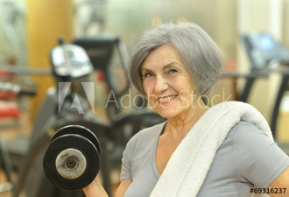

Have You Noticed a Decline in Your Memory? Exercise May Help
Research Centre: The University of Sydney
Location: Cumberland Campus, The University of Sydney, 75 East St Lidcombe, NSW
Lead Doctor: Dr Maria Fiatarone Singh
Ethics Committee: This study has been reviewed and approved by The University of Sydney Human Research Ethics Committee
Background
Mild Cognitive Impairment (MCI) causes a slight but noticeable decline in mental abilities, such as memory loss and impaired thinking. People with MCI have a much higher risk of going on to develop dementia.
Previous research has shown that regular exercise may help improve brain health and prevent dementia. This study is comparing the effectiveness of three different kinds of exercise on memory and thinking abilities.
This study seeks men and women aged 60+ who have noticed a slight decline in their memory and/or other mental abilities. Participants will be randomly assigned to one of three different exercise training groups: a) Strength training group, b) Aerobic training group, or c) Balance, toning & mobility training group. Participants will be invited to attend 3 supervised exercise sessions per week for 12 months at the research site in Lidcombe.
Benefits to Participation
- You may experience an improvement in your memory and other aspects of your physical and mental well-being.
- You will receive supervised exercise training sessions 3 days per week for 1 year at no cost to yourself.
- You will receive a comprehensive geriatric assessment by the study physician and research team, including a physical examination, stress test, bone scan, MRI scan of your brain, metabolic and cardiovascular health profile, evaluation of your nutritional status, fitness assessment, fall risk assessment, and full evaluation of your cognitive function.
- You receive free parking at the research site.
- You will be helping to advance medical research.
Your Rights
- If you decide to participate in the study and later feel that you no longer wish to be part of it, you may withdraw at any time.
- Your records relating to this study and any other information received will be kept strictly confidential, except as required by the law.
- Qualified health professionals will monitor your health as it relates to the study.
Who Can Participate?
Men and women aged 60+ years old who:
- Have noticed a slight decline in their memory and/or other mental abilities
- Have not been diagnosed with dementia or a progressive neurological disease (such as Parkinson’s Disease)
- Are able to walk without the assistance of another person (use of assistive device is fine)
- Do not exercise more than 2.5 hours per week at moderate or vigorous intensity
- Are able to attend 3 exercise sessions per week at the research site over 12 months
- Do not plan to be away for 4 or more consecutive weeks over the next 12 months, and are not planning to move.
Trial Location

Click above for a larger map